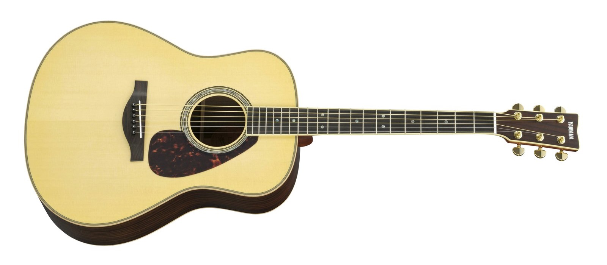

Věci, které se dají zahrát po práci. Ne závod o tempo.
Kytara pro normální lidi
Joy To Play
Nauč se málo. Zahraj hodně.
Tohle není kytarová škola. Je to osobní průvodce pro lidi, kteří mají práci, rodinu a další koníčky — a chtějí si občas vzít kytaru do ruky a mít z toho radost.

Nemusíš hledat dvě hodiny na YouTube
TJ už to za tebe prošel. Vybral jen to, co zní lépe, než je těžké.
Málo položek. Jen opravdu dobré návody, které dávají smysl.
Nejdůležitější část webu. Proč zrovna tohle — lidskou řečí.
Doporučená videa
Srdce projektu. Ne stovky videí. Jen věci, které stojí za tvůj čas.
Kytara není závod. Je to radost.
Kam se vydat
Každá sekce má jeden důvod. Žádný tlak. Zkus to, užij si to.
01
Začni dnes
Dnes se něco naučíš. Dnes si něco zahraješ.
023 akordy a hotovo
Nejjednodušší skladby. Nejvyšší poměr náročnost / výsledek.
03Fingerstyle pro normální lidi
Žádné extrémní techniky. Jen použitelné věci.
04Johnny Cash
Vlastní sekce. Protože jednoduchost a groove.
05Karel Kryl
Vlastní sekce. Protože spousta lidí začíná právě zde.
06Top objevy
Jen několik výjimečných videí z celého webu.
Doporučené kanály
Když už klikáš na YouTube, tady jsou lidé, ke kterým se vyplatí vracet.
Kdo je TJ
Není to pohled profesionála
TJ není učitel. TJ není virtuóz. Hraje přibližně 30 let, měl dlouhé přestávky a vždycky se ke kytaře vrátí.
Právě proto je doporučení důvěryhodné. Je to pohled běžného člověka, který má práci, život — a kytaru, ke které se vrací.
Yamaha LL16. Epiphone Dove Studio. Hraj pro radost.
Tón webu
- Musíš cvičit.
- Tohle hraješ špatně.
- Bez hudební teorie to nejde.
- Zkus to.
- Užij si to.
- Není kam spěchat.
- Hraj pro radost.
Verze 2
Doporuč video
Narazil jsi na návod, který zní lépe, než je těžký? Pošli ho. Ručně vybraný katalog zůstane malý.
Díky. Tip je uložený u tebe v prohlížeči — až poběží verze 2 naplno, TJ ho odtud sebere.
Co je úspěch
Úspěch není sto tisíc návštěvníků. Úspěch je, když někdo po práci vezme kytaru do ruky, otevře Joy To Play a najde jednu věc, která mu udělá radost.